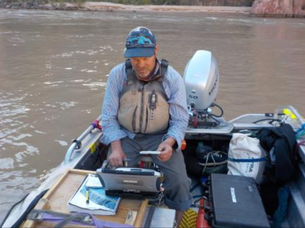
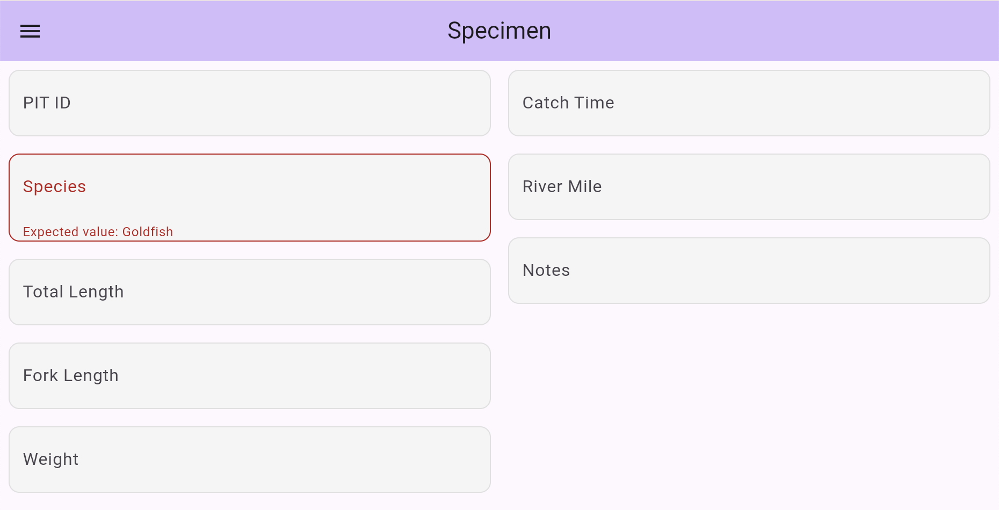

Project
Description
Fish Monitoring in the Grand Canyon
The Arizona Game and Fish Department, U.S. Geological Survey, and U.S. Fish and Wildlife Service conduct and support fish monitoring in the Colorado River and Grand Canyon. Biologists collect information on roughly 150,000–200,000 fish each year, including species, length, weight, and location. Many fish also have PIT tags that allow them to be identified if recaptured.
Collected records help researchers track fish populations and understand changes in the river ecosystem. Field crews need dependable software to enter accurate data while working in remote areas.

The Current Problem
Field crews currently use SHOALS, an older Windows program that has not received regular updates. Biologists rely on it to record fish measurements and PIT-tag information, review previous captures, and manage data collected during field surveys.
Because SHOALS is aging, agencies need a dependable replacement that can continue to be maintained and work with newer computers and survey equipment.

CRAB CAKES v2
CRAB CAKES (Colorado River Area Biologists Computer-Aided Knowledge Entry System) is a desktop application initially developed by the previous NAU Capstone team, SharkBytes. PIT Crew is continuing their work to make the application more reliable and ready for field use.
Our focus includes scanner connectivity, PIT-tag history, a clearer interface, QA/QC visualizations, local backups, and support for Windows and Linux.

Why It Matters
With so many fish recorded every year, even small data-entry errors can affect research. Field crews need to catch mistakes early, compare current measurements with historical records, and review their data before leaving the field.
A reliable, easy-to-use replacement for SHOALS will support efficient fish monitoring and long-term conservation work in the Grand Canyon.
High-Level Requirements
CRAB CAKES v2 must support offline field data entry and local SQLite storage, improve Bluetooth PIT-tag scanner connectivity, and work on Windows and Linux. It should be easy for field crews to use and protect survey records through local and external-drive backups.
Other key requirements include PIT-tag history lookup, warnings when a fish has a shorter length, lower weight, or different species than a previous capture, and the option to verify and override those warnings. The application will also provide QA/QC graphs, filters, summaries, and pivot tables.
Users need to export project data in CSV or tab-delimited formats, including separate sample and specimen tables or a combined table. The application is intended to be a standalone program without cloud storage.
Envisioned Solution
PIT Crew is improving the existing Flutter desktop application instead of building an entirely new system. Biologists will be able to create or open a project, connect a PIT-tag scanner, enter and review specimen data, and keep working without internet access. Local storage and external backups will help protect collected records.
Our current QA/QC prototype reads fish records from a local SQLite database and uses them to create length-versus-weight plots, species counts, customizable graphs, pivot tables, and summaries. Work is continuing on scanner reliability, PIT-tag history, Linux compatibility, and other field workflows.